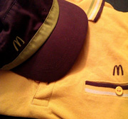
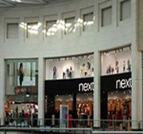

About Me
A second year undergraduate student, studying Bsc Web Development at Manchester Metropolitan University. I am currently aspiring to gain a work placement within the area of study I have gained knowledge in. My interests lie in it but also co-operating sectors such as Business or Finance even.
The reason why I have chosen this degree is not only due to personal interest and goals, it is to become familiar with technological updates as the world we live in today revolves around media and technology. Industries are looking for fresh talent with new and various ideas to bring to their companies. Becoming successful in the work I do is a must, therefore I am working hard with full motivation to aim high in all of my units so that I get excellent results. Overall I am aiming to get a 1:1
In regards to future developments, through job progression I would want a long term career in Web Development. I would like to gain the best experience in a reputable and prestige company within the UK to build on a portfolio. However, through enhancing job prospects, I aspire to own a firm with my brother abroad such as Dubai, to web design for independent and well-known companies. Future aspirations is one of the reasons why I am looking for an internship as to get to what I aspire it is important to make the right path in doing so. To work practically in the work force to gain experience is just as important as having a piece of paper that states 'graduate'. I graduate in June 2016 so it is important for me to gain experience in web development before graduation as it will make job applications an easier step.
Web Design Summer Internship
Over the summer I gained valuable experience related to my degree. I have done a internship for a small company called Shaz Designs mainly specializing in Word Press. During my work experience I have done many projects for the company and their clients, I was involved in the building of the sites by organizing the content and layout of the site in the back end. Regarding to the front end I was making sure that the site looked amazing visualized. Many of the projects that I have worked on are in the final stages of production and will be launching live soon hopefully. For now I am only allowed to show one project which is currently live, which I help build for my CEO Shaziya Ramji for her company Shaz Designs.These were my job responsibilities during my working experience were, Conversion of visual design & wireframes, Working HTML, CSS, Wordpress, Various web design tasks and Social Media awareness for the brand.
Hospitality

Outside education life I have been working in hospitality and retail.My first part time job was in my home town Walsall at Mc Donalds. My job title was Customer Care Assistants. I had been at Mc donalds for 3 years and 4 months. Responsibilities for the role were working as part of a team to achieve store targets and always aiming to achieve the best to increase sales, making sure the dining area is clean and welcoming environment and excellent customer service by interacting with the customers.This job made me by disciplining me and making me more confident to engage with people from different cultural background. The reason I left this job because I moved to Manchester for my studies.
Retail

Currently I am working for Next at Manchester Arndale. Next is part of Retail sector. My job title is Customer Consultant.I have been working for Next around 11 months. Main responsibilities for the role is to maintain high level of customer service by advising products to customers, explaining benefits and qualities and meeting customers needs, working as part of a team to fulfil the needs of the business by achieving targets set and Fulfil major challenges including coordination of work across regions requiring open communications and awareness of cultural differences that impact decisions and work processes.